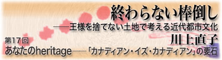

|  |
|
■ ハイフン付きのアイデンティティ Japanese-American、Filipino-Canadian、Polish-Canadianといったように、二つ以上の国名、共同体名、民族名がハイフンで結ばれているのを見たことのない人は英語圏ではいないだろう。しかし、この慣れ親しんだ表記法が何を表し得ているのか、どんな効用があるのかまで考えを巡らせている人は多分稀だろうと思う。 単純にいえば、この慣用の今日のコンセンサスは、こうしてハイフンで結んだ語が特定の人物の上に付された時、それはその人物の出自と現在の所属を表すものだ、というところにある。この同形の語の重なりでそう読めるのは、この重なりの、後ろの方が国籍 nationality の存するところ、市民権取得の国を表すものだという理解があるからで、これを受けた日本語環境では、これらの語を訳す場合、翻訳者は別に個々の人物の来歴に関して何も知らなくとも、Polish-Canadianと書かれていたら、ポーランド系カナダ人、と書き、それを読んだ人は、ポーランド出身のカナダ国籍保持者なのだなと自動的に了解するという暗黙の了解が成り立っている。 しかし、このPolish-Canadian、またはポーランド系カナダ人は、この記号が示す表面以上に実際には複雑である可能性は高い。この人は4年前にポーランドを出て去年カナダ国籍を取得した人かもしれないし、それは30年前かもしれず、さらにはカナダ生まれのカナダ育ちだが両親がポーランド人だからこう呼ばれるという場合もある。その4代目ということだってあるだろうが、実はその中には別の国から来た人も含まれているが、父親の筋がそうだからそうだと主張している人もいるだろうし、全体としてだいたいそうだからそうだとしか考えていない人もいるだろう。 また、最初の人の場合、当該人物は同時にハイフンなしに堂々のポーランド人であるのは言うまでもない。ポーランド国は二重国籍を認めているから法的身分も含めて満額でそうだ。後者の場合もそれがあり得る。しかしその中身は、ポーランド国籍を持っているけど、でもウチは基本形はリトワニア人なのよ、ということかもしれないし、ドイツ系住民が主体でしょうか、おじいさんはウクライナから「来た」のですけど…といった証言以上を得られないまったく頼りにならない状況かもしれない。 ポーランドを例に取っているが別にポーランドだけが特殊なわけではなく、二重国籍を認めていることだけに問題があるわけでもない。人を出自を基に表現することはマジメにやろうと思ったら思ってもみないほど面倒でそして不確かな話しになり得る、ただそれだけだ。 実際、カナダでもアメリカでも、よくよく尋ねてみると言ってる本人も自分の祖父母以上についてよくわかっていないケースは珍しい話しではない。そもそも戸籍があるわけでなし、移民して来た祖父母、曾祖父母の移民前の履歴に遡って記録、保存し得ている人が非常に多い、などとはとても言えない。アメリカ人、カナダ人の多くは、そうでなかったら何と呼べばいいのかわからない人だ、と言ってみても間違いではない。同時に、幾通りにも「なにじん」となり得る人もいる。同じ人物は異なった場所において、別の言い方をされ、上のポーランド系カナダ人たちは、ポーランドではポーランド人と呼ばれ、リトワニアンやジャーマンの共同体でそれぞれ違和感なく過ごし、そこにいた誰かにお前はオレと同じだと肩を叩かれるという事態も全く想像に難くないのだ。 そして、このいい加減さ、またはある種の多様性が、人の出自を表すということの総体、つまり現実だ。 ■ ハイフン付きのアイデンティティ：極北編 それにもかかわらず、このハイフン繋ぎの形容が、これら水面下の複雑性に関して全く見知らぬ顔をしながらも比較的しばしば使用されることには多分特別な意味がある。 Hyphenated：形容詞、「ハイフンで結んだ；混血の；外国系の」 これは私が日本から持って来た英和の辞書の中にあった記述なのだが、たまたま引いて、私はかなりの衝撃を受けたことを記さずにはいられない。いったいいつの辞書なのかとあわてて発行年を探したが、別に戦時中のものではなく、1984年版の、編集方針に特に変わった志向を持ったものではないと考えられる、収用語数の多い、それなりに広く使用されている辞書ではある。 どうしてこうなるのか。それは外国系、愛国心という言葉でわかる通り、この辞書の定義は、ハイフン繋ぎの慣用に収まる語句を国に限定し、かつ、一人の人間は一つの国に属しているべきだ（さらにそれなら愛国的だ、と考えているらしいがそれはここでは問わない）を無条件に前提にしているからだ。 しかし同時に「混血の」とあるから、混血でない人を想定してもいる。が、上述の通りそれは英語が使われる場、取り分けアメリカ大陸にあってはあまり用をなさない定義だとしか言い様がないから単純に却下する。 （本筋とは関係ないが、「外国系市民」というのはどういう人を言っているのだろう？ この語からはforeign citizenと見えてしまうのだが、それなら立派な外国の市民で、つまりホントのガイジンだ。ハイフンか否かは当該国にとって関係ない。おそらく執筆者が言いたいのは、外国生まれの市民 foreign-born citizen のことではないかと思う。合衆国憲法は外国生まれの市民に大統領選挙への立候補資格を認めていない、だから法が外国生まれを『一人前』ではないと認めているのだと結論する人は昔からいるので、それを言いたいのだろうか？） ただし、戦時下にも似た2001年9月11日のアメリカで（2003年からは文字通りに戦時下だが）、「アメリカだと、いつまでたっても私はJapanese-Americanとして扱われますから…。一人前じゃないんですよね」と言った人を個人的に何人か知っているから、辞書はまんざら外してはいないのだ。 そうはいっても、最初に書いたような状況を背景として考えれば、この慣用を国家間限定にするのは戦時を除けばいささか無理がある。戦時中の辞書のようだ、というのは感覚的であるようでいて実際意味がある。戦時というのは死ぬか生きるかの絶対的な二元論を根拠として、どうあれ「敵か味方か」にすべての人間を分類しないではすまない特殊状態だから、恣意的なラインを設けて人を二分したくなる心理が関係する多くの人の上に働く。ハイフンかどうかはそのラインの上に設定される（本来的な意味などどうでもよいのだ）。 第5回で書いたように、納得して、理由としては完璧だと考えてアメリカに対してノーといったはずのカナダが、開戦と同時に、ということは私たちはアメリカの「敵」なのか？という事態に自分で困惑していたことはこの証左となるだろう。となると、そういうことではない、私たちは長年の、世界で最も親しい友人だと言い張り続けたカナダの政府、知識人たちは、この単純な理屈を非常によく知っていたということになるのだろう。一時的には、敵対して友情を言うという矛盾に見えたとしても落ち付き先から考えればそれは矛盾していない、と。 また、敵か味方かの恣意性が最もよく現れたケースを私たちはもうひとつ指摘できる。第二次世界大戦中のアメリカ、カナダにあって、ドイツ系、イタリア系アメリカ人と日系の処遇が極端に違ったことがそれだ。その区分線の取り方は決してハイフンが付くか否かでもなければ、目の前の現実としての政治上明らかな敵か味方かでさえなかった。 ■私的な使用と公的使用 まとめて言うなら、普通人は遡れば遡るだけ多様な背景を持っている可能性があり（中にはきっと純血純粋の人がいるのだろうと一応遠慮する）、場合に応じて必要な出自が開示され、それに応じて分類されるということになる。 しかし、この状況、多様な背景が混乱しつつも了承されあっている状況を日本語環境で暮らしている人が把握するのはいくらか難しい。 CanadianとかIrishといった語は、ある時ある場合にはカナダ人、アイルランド人と意味が限定される（名詞化する）が、別のところでは、カナダ風の、アイルランド風の、（あれば）カナダ語の、とも使われる。その上、例えば、アメリカ人があって一方にユダヤ人があることを見ればわかる通り、それが国籍所有を含む概念として使われているわけでは全然ないし（ユダヤ人）、逆には人種や民族背景が集団として歴史的に認知されたから使われているというのでもない（アメリカを建国したからアメリカンという語、その中身が生まれる）。 ところが日本語環境では、これら曖昧な、言い方を変えれば自由度の高い語を、アメリカ人、イギリス人、フランス語と意味を確定した状態で使用している（翻訳された姿がそうならざるを得ない）。つまり、言語が背景とする多様性を想像しにくい状況になっている。その上に、「カナダ国籍を取ったらもうあなたは日本人ではない」といった、国籍＝○○人という考えと、「カナダ国籍を取ろうと日本人は日本人だ、え？お父さんはポーランド人？ じゃあ日本人じゃない」、純粋血統＝○○人、という考えが混在している。国籍、民族を区別する発想習慣がないという歴史的事情もさることながら、バカバカしい言い方だが、最後に「人」を付ける形式を所与の前提にするから、どうしても一つの意味を獲得しなければならないと発想するのではあるまいか、などとも見える。 つまり、国籍主体と民族主体を争ってどちらか一つにしなければ気がすまないと考える人が多くなるわけだが、仮に日本国内、日本語話者間でどちらかの決着が付いたとしても、世界中の大多数の人、とりわけヨーロッパ語を話す人びとはこのように非常に曖昧な、少なくともそうなり得る語を使用して日々を過ごしているのだから、「こちら」の都合に合わせて相手の型を抜くような作業は依然として続くことになる(*1)。 ■パブリック・ライフの現実 話しが回りくどくなったが、要するにこのハイフン繋ぎの語は、それら両方以上をまかなって、時と場合と話者の事情に応じて意味が限定される形できわめて「私的」に使用されている。だから、法的な根拠を問うような場合にはもっと曖昧でない言い方が採用される。 例えば、ある職種に応募しようとすると、「ここで働けるのか？」と問われ、応募用紙の中で、 とか、 といった文言を見ることになる。どれだけ慣用法で、Canadianとはカナダ市民のことだと了解されていても、こういうところで、あなたはカナダ人か否かといった質問をする人はいない。 上の項目は、市民は、言うまでもなくその国の構成者として満額の権利義務を持っているのだから、日本の国民である私たちがワーク・パミットぉ？と尋ねたくなるほどに自明以外の何ものでもなく労働を得ようとする、それと同じ状況にある人。永住権保持者も同様。市民と永住権保持者の違いは、主に参政権の有無（まさかの時の徴兵と考えたい人は考えてもいいが）で、カナダの場合市民権を申請する人はとても多く（徴兵されそうもないからだろうか？）、将来の市民として考えられていると言っていいと思う。労働許可は、原則的にある特定の雇用者に雇用されることを前提に発給されるので、（2）-cのように、働きたいから、転職したいからその特定雇用者になってくれ、という事情が発生する。 （1）のケースは、主に公共機関の募集に見られるもので、職務によってはそのついでに、Visible Minorityか先住民 Aboriginalか、視聴覚、身体への障害の有無を示す項目が任意で付いて来ることがある。Visible Minorityとは見た目でわかる少数派とでも言ったものなのだが、内訳を見るとチャイニーズ、コリアン、ジャパニーズ、フィリピン、ブラック、非白人のラテンアメリカン、非白人の西アジア・北アフリカまたはアラブ、東南アジア、南アジア・インド、その他混合したオリジン、と要するに、白人以外すべての人びとと解していい大群がすべて対象になっている。 ベネフィットがあると思えばすれば答えるもよし、そう思わないのなら飛ばせばいいが、大抵のマイノリティは聞かれたら答えているのではないかと思う。というのは、公共機関がマイノリティの雇用の調整弁になっているとある程度信じられているからだ。そしてその主たる理由は、マイノリティの保護という理由もさることながら、もっと現実的には、英語以外の言語を操る能力を生かす職場は確かにある、こういう人は必要だというところにあるだろと考えて悪い理由はないように思う。私自身コミュニティ内の通訳者に応募して詳細を知ったのだが、日常英語が出来ても、医療や裁判、各種の相談事となったら、特定の母語とそれを通した特定のニュアンス、背景事情を知っている人がいた方が誰にとっても結好な話しではあるのだ。 そういうことだからなのか、使用可能な言語を尋ねる項目は、そこかしこにある。そもそも大抵の応募書類には、まずあなたの公用語を英語かフランス語で選べ、はもれなく付いて来るが、公的機関のそれには、それぞれのレベルを書け（上級、中級、初心者など）、その他出来る言語を書けという項目もある。世界中にはこんなに言語があるのかと感心させられるような長いリストを見ながら、こうして人びとはカナダ政府にリソースの提供を申し出ているわけだ。 ■「黒でも白でもフレ ンチでも」 就職に際しての光景というのは、人によっては出自やアイデンティティと遠い話しのように見えるかもしれない。前者は経済であって後者は文学のような感じもする。しかし、もちろん日常はこんな具合に分岐してはいないし、職を探そうと思ったら隣の誰かと同じように事が進まないから自己や出自を考え出すという成り行きが多いことから考えれば、後者で問題を抱えたくないのなら前者に着目することが求められるのは理の当然だ。 こう考えて来た時、しかしながら、カナダというのは、アイデンティティをどうするのかといった問題一般に関して、取り立てて積極的なことは何もしてないといっても過言ではない。せいぜい公共機関での調整（しかも上のように現実的な理由のある）がある程度だろうと思うのだ。 際立ってやっていることといえば、また同じことの繰り返しだが、カナダ人はカナダ人だと強弁し続けていることぐらいかもしれない。しかもたとえば、こんな過激な現れ方をしてさえも??。 事は、40年前、カナダといえばお決まりの、英語話者（English speaker）とフランス語話者（French speaker）の間で起こった。当時ビジネス界といえば英語しゃべりの独壇場であり、その度合いは今よりも一層濃いものだったという（それはカナダに限らず世界中そうだった、そして今でもそうかもしれないわけだが）。 ある時、カナダ国営鉄道が議会で収支報告を行った。そこで、あるフランス系議員がその報告書を指し、「カナダ国営鉄道には、会長ひとり、副社長17人、部長10人がいる、が、ここにはひとりもフランス系カナダ人 French Canadianがいないということがよくわかりました」と切り出した。以下会長と議員の対話を意訳すると（出典『Canada: A Peopleﾕs History』vol2, p254）、 会長「どうやってわかるんですか？」 といった次第で、もちろん、まずもってフランス系住民にしてみればイギリス系支配層への苦情を申し述べたいのに話は噛み合ない。さらにこの会長は、まったく懲りることなく、満場の議員たちを驚かせつつも、フランス語しゃべりのカナダ人に高いレベルの管理能力のある人がいないからこういう結果になっている、だから「誰でも、その職にとって一番いいと考えられる人が昇進する、それがたとえ、黒でも白でも赤でもフレンチでも」と言ったのだそうだ。 当然のことながら、この発言はそうでなくても火のついていたフランス系の独立問題にとって格好のネタとなった。それは、多くの人々はこの発言を「フランス系には管理能力のある人はいない」と読み、差別的処遇の問題として取り扱うことの方に集中したからだ。 しかし今となってみればここから2つのことが分かる。結局のところ問題は仏系、英系でも言語でもなく経済支配の問題だったのではないかということ、もうひとつは、国家と個人の関係において、そして競争社会にとっての公平さという点で、この会話に対して正面から向かって勝つことは意外に難しそうだということだ。黒でも白でも赤でもフレンチは、いくらなんでも口が過ぎるという点で非難を受けることはあるだろうが、ある職種、あるポジションを選ぶための基準、クライテリオンを人種や民族背景以外に設定しそれを遂行しようとした場合にもたらされるものは、黒でも白でもであるより他はないのだ。勿論、誰でも気づくように、さすが本家弱肉強食と言ってもいいわけだが。 カナダというと、多文化、マルチカルチャーといった語を思い出す人が多くなっているために、なにほどか人権や平等に配慮したことを基調に政策が取られていると想像する人が多いやに見えるのだが、私が把握する限り、この社会で根本的に共有されている強いアイデアは、フェアであろうとすることではないかと思う。そしてそれは、深刻なまでにこの社長のようなビジネス・マインドに密接な関わりがあり、だからこそ時代を経て強く根を張っているのではないかと私は考える。別の言い方をするのなら、これは流行でもなければ思想でもない?少なくとも今の「文明」が完全に死に絶えない限り。 ■It's your own heritage ビジネスには相手がいる。しかも相手は自分とは異なった利害を持っている。だからこそ合意がなされ、その合意を全うする責務が生じる。 今さら私が言うまでもないが、歴史的に考えれば、市民権とはこの合意であり、その利害対立者は国家と個人である。と、そのことを思い起せば、カナダ人はカナダ人だ、とは、つまり、市民権は市民権だと言っているのに他ならない。 だから、カナダ人に別種の解釈を与えようとすることはこの市民権の内実を変えようと企てているとも言える。実に大仰な言い方だが、契約とはそういうものであるのだし、そのように法を定めている限りそうでないとは言えない。 しかし、そうはいっても人はそんな契約のみ生きていられるものでもないし、生きてもいない。同じものを喜び同じものを悲しいと思うのなら、私とあなたに共通のものがあるのだと考えたくなるのは古今東西変わりのないホントのことだろう。時を共にするにつれ、昔の話しを聞くにつれ、その堆積の中に、目の前をゆく人の歩みのごとに、いわく言いがたい感情をカナダという語を媒介にして抱くとしても、誰もそれを止めるわけにはいかない。 この様子を、身もふたもない言葉で表現すれば、そこに付着しているものは個人の感情であり、これは権利義務関係から言えば、余計なもの、つまり「余情」である。 1988年のソウル・オリンピックでカナダ代表のベン・ジョンソン選手は100メートルで金メダルを取った。当然のことながらカナダ中が大いに涌いたのだそうだ。ところが周知のようにジョンソン選手はすぐさまドーピング検査で黒の判定を受け、金メダル剥奪の騒ぎになった。カナダ人たちは誰言うこともなく「でもあの人、カナダの生まれじゃないのよね」と言いだし，Canadianではなく「Jamaican-Canadian」と表記しだしたのだそうだ。 これを教えてくれたのはカナダ生まれの中年のカナダ人で、思い出しながら半分バツの悪そうな表情を見せながら、「でもだってこういうもんでしょ」と言った。私は、こういうものじゃないと思ったところで人の感情を支配できるものでなし、とまず思い、自分だったらどう感じたかの想像はできないと思いつつも、私のキャラクターは意地になって「正論」を吐く方かもしれないと考えたりもした。しかし私はそこに居合わせていないのだし、同じように今ここに居合わせていない人の感情を責めても意味はない。 カナダ人に「余情」が付くのなら、それは当然に誰かにとって大事などこかにも何かにも誰かにも情が付く。それを誰が止められるだろう？ 止めるべきではない、のではなく、現実にそれは止められないのだ。 そうであるならば、Irish CanadianのIrish、Japanese CanadianのJapaneseは、上で見たように私称であり、それは誰かの感情に基づくものでしかなく（誰かを日系カナダ人と書き留めるそれも筆者の感情に根を張った判断であろう）、それはつまり、もし政府に「感情統制教育」をしてもらいたいと思わないのだったら、カナダ政府、あるいはカナダという国家の預かり知らぬところにある。 It's your own heritage、それはあなたのheritage（相続財産、伝統）でしかないのではなく、だからこそそれは誰にも侵害できはしないのだ──少なくとも感情統制教育モデルを伴った革命が起きない限り。 つまるところこれは、そのheritageを無軌道に統括させないためにこそ、市民権を媒介に国家を作ったという歴史をただ思い出させてくれる話しではあるのだ。 ここから考えた時、1988年から施行されている多文化主義政策法（Canadian Multiculturalism Act）が、カナダ人を多文化的な遺産と見なしている（the multicultural heritage of Canadian）のは、南の大国のことがあるから画期的に見えるのかもしれないが、実のところそれほど新奇なアイデアでもないのだろうと私は考える。骨子は、この「余情」の処理をそもそも国家に預けようとも思っていなかった人びとの中で、ただそれを覆さないために法的に決定したといったところだろうと思うのだ。 ■一葉メイプル・リーフの旗の下 最後に、自分が心から納得できるもの、heritageを守ることがこの社会で認められていなかったらおそらくあり得なかった、少なくとも後世の評価、表現は違ったものになっただろうエピソードを紹介したい。 カナダは誰でも知っている通りイギリス、フランスの植民地を原初として出発し、その後この両者の間の戦いに勝ったイギリス系がその統治を行い長く自治領時代を過ごした。自治領としてのあり方は殆ど独立国といってもよい状態で、それがために逆に是非にも独立をといったムードにはならなかったようでもある。しかしその「独立」は、むしろ国内の事情によって必要とされるようになった。 1960年代、カナダ国内は、長年のフランス系、イギリス系の抗争、東部と西部の間の違いが顕著になってきた上に、世界的な変革期の波を受け、分裂含みの危機の時代を迎えていた。 この状況収集するために、時の首相ピアソン（Lester Pearson、自由党、在1963-1968。1957年ノーベル平和賞受賞、トロントの空港の名前は彼の名から来ている）は、カナダの国旗を新しくすることを提案した。 当時カナダは既に90歳を超えていたが、議会やすべての官公庁に翻る国旗はイギリス国旗であるユニオン・ジャックか、場合によってはRed Ensignというイギリスの商船旗（赤地にユニオン・ジャックを入れたもの）をいくらか修正したものだったのだ。 当然のことながら、国中から5900ものデザインが寄せられるものの、議論は紛糾し、最終決定の議会は37日に及び、その中では実に保守党210、自由党50、NDP24と壮絶なスピーチ合戦が繰り広げられた。反対派で有名な一人には、進歩保守党で、直前まで首相だったディーフェンベーカー（John George Diefenbaker、在1953-1963）がおり、彼は、新しい旗は仕方がないとしても、そこにはなにがなんでもユニオン・ジャックがデザインの一部として入れるべきだと主張していた。結果的には現在の左右が赤、真ん中の白地にメイプルリーフ一葉という形が決められたが（ピアソン自身は別のものを推していた）、ディーフェンベーカーは、この旗も、ピアソンのやり方も何もかもが気に入らず、あんたぐらいこの国を分断させようとした人はいないとこき下ろしたと伝えられている。 もし「カナダ人」が、個人の「余情」をも公的に清算され得るものだとしたら、彼はカナダに抗するもの、非国民と呼ばれねばならなかっただろう。 ■註 *1…つまり、『多文化的な相続財産』など誰も感情を付託できないのだから現実的には相続できない。一方、国家の構成員が変わっていけば、感情の付託先を、共同体的な安心感に還元できる諸々の事情を契機に「カナダ人」に求める心理機制が働く人が増加するのは目に見えている。これを放置すれば諸々の国民国家群が辿ったように「カナダ人」の内実を強化するところまでこの世紀に戻らなければならない。背景事情として元仕えた帝国2つは共に敵味方区分、分断策で知られてもいる。その打開策が、そもそも適度に存在した個人主義的傾向と、市民権媒介型の成立事情を鼓舞する形での、個人のheritageを尊重するというアイデアだった、と私は解釈する。その意味で優れて国策的だ?個人の従来的な思考方法を何一つ変えてはおらず、むしろ鼓舞しているだけだと言うのに。 蛇足ながら、こう考えた時、もっともカナダ的でない多文化解釈は、各々の「個人」ではなくて「民族」がそのまま共存できると考えることだろうと思う。結果的にそうなったとしてもそれは個人の総和がそうしている、というのが原則であって民族を表すことを念頭に置いているわけでは全然ない。その意味からは長い目で見た「同化」案なのかもしれないが、従来思考されてきたものとの相違は、長い時間の間には全体が変わる可能性を否定していないことだろう。同化案の最大の欠点は同化「させる」ことが難しかったというよりも、同化させる側が集団的な伝統、heritageにこだわるあまり、自身の側に神話を必要とするのみならず、自身の側の自発的な変化を阻止することになるからだろうと??つまり南の大国を見ているとそう見えるのだ。 *2…このエピソードは森鴎外の「石見人森林太郎トシテ死セント欲ス」を思い出させる。どういうわけだか位階勲等を拒否した方にだけ焦点が当てられているが、これは石見の人として死んで行く、ということの方が余程重要であろう。 |
| 川上直子（かわかみ・なおこ） 翻訳者、企業間コーディネーター。トロント市在住。 アメリカとの対比を国際関係だと語る、この思考習慣を止めるには何ができるのだろう？ そんなことを、USがUSでしかないカナダで考えています。 http://kawakami.netfirms.com/ |